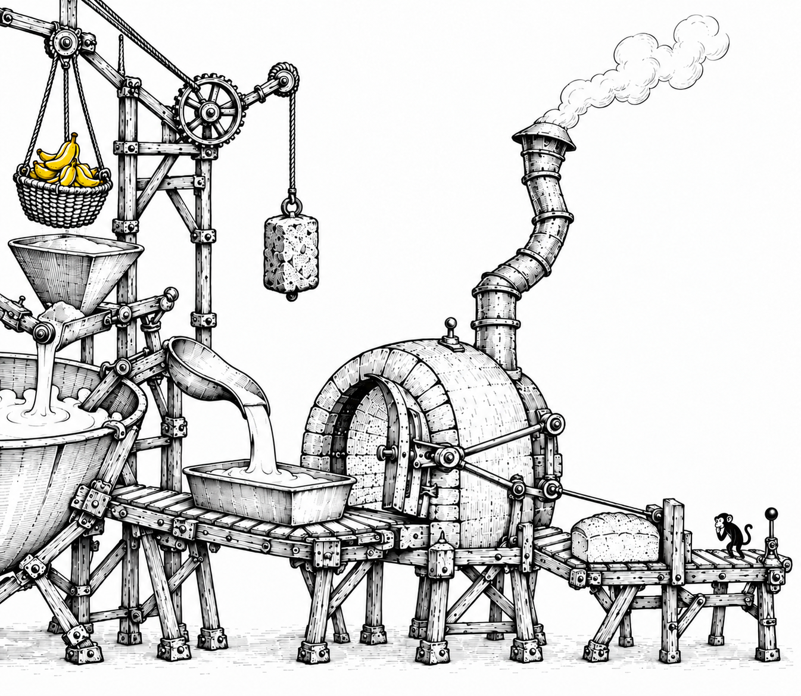

The Spotted Ape / Stage 1
The machine works.
Judgement waits.
A miniature factory, with one small inspector beside the final release.

The Spotted Ape / Stage 1
A miniature factory, with one small inspector beside the final release.
